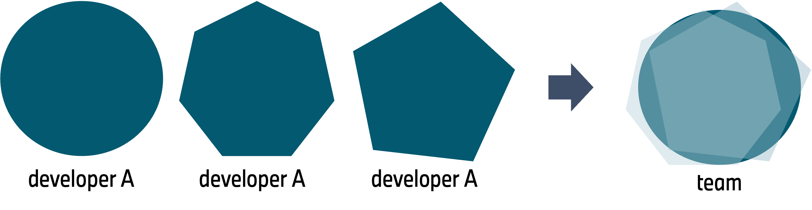
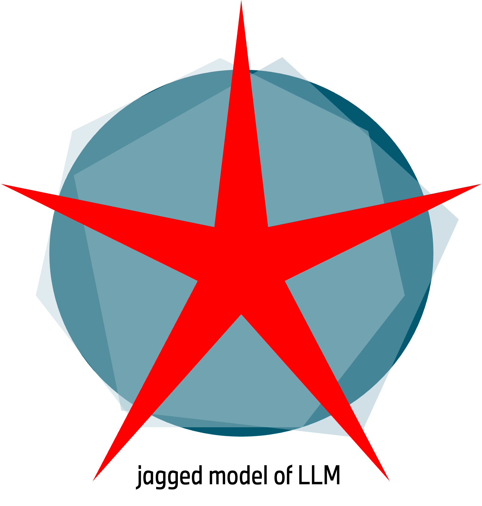
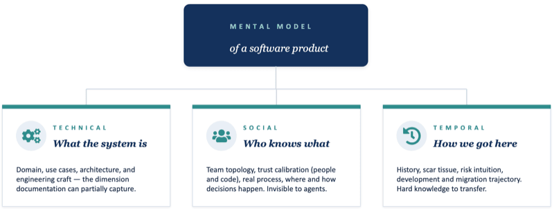
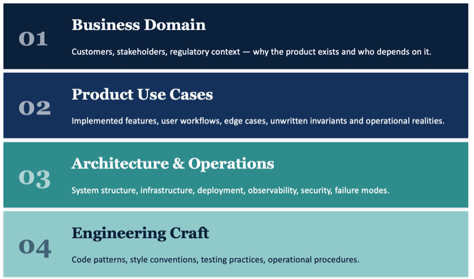

Our Mental Models Cannot Be Outsourced
A program is not its source code — it is a theory in the minds of its developers. — Peter Naur, 1985
Definition
The mental model of a software product is the shared understanding that a development team holds about:
- What the system does — its purpose, behavior, and boundaries
- Why it is structured the way it is — the reasoning behind design decisions
- How its parts interact — data flows, dependencies, failure modes
- How to change it safely — where changes are safe, where they are dangerous, what breaks
This understanding is practical knowledge — not documentation, not source code, not architecture diagrams. Those artifacts help transmit the mental model, but they are not the model itself. The model lives in the heads of the people who build and maintain the system.
The Team’s Mental Model
No individual developer holds the absolute truth about a non-trivial system. Each person carries a partial, slightly-distorted approximation — shaped by what they have built, what they have debugged, and where they have been burned.
Think of the true system as a circle. Each developer’s understanding is a different polygon inscribed around it: roughly the right shape, roughly the right size, but with their own edges and corners.

When the team works well, these polygons approximate the ground truth. Where one person’s edge cuts a corner, another’s covers it.
Why It Matters
It is what Kent Beck and Peter Naur point at when they talk about a shared metaphor: The closer each person’s guess is to their teammates’ guesses, the more coherent the resulting design. With ten developers working in parallel, a shared metaphor is what prevents the codebase from drifting into chaos.
A system remains alive while its team possesses the mental model. It dies when that knowledge disappears — even if the software still runs and the documentation still exists.
The Jagged Intelligence Problem
An LLM agent’s competence is not shaped like a human’s. A senior developer’s understanding resembles a circle or polygon — uneven, but bounded, convex, and roughly the size of the system. An agent’s competence is jagged like a star: spectacularly long spikes in some directions, deep concave gaps between them.

Along a spike, the agent outperforms any human on the team. It has read more code than anyone alive, recalls obscure APIs instantly, drafts plausible implementations in seconds.
In the gaps between — the agent spectacularly fails and baffles us with incompetence. For example it is oblivious to critical, undocumented business invariant, which every team member hold as tacit common knowledge.
This is jagged intelligence: brilliant in places, blind in adjacent places, and — the critical part — the agent cannot tell the difference. There is no internal signal that says “I am on a spike” or “I am in a gap.” The output looks equally confident either way.
Nobody knows where the gaps are — it is an unknown unknown, which makes it potentially very dangerous.
The team’s polygons cover full system complexity. The agent’s star covers parts brilliantly, while leaving entire regions untouched — yet because its visible spikes are so impressive, it is easy to be fooled to believe the model has got everything under control.
It is a trap. A powerful agent can lull a team into delegating not just the typing, but the understanding. The polygons start to shrink: developers stop building the parts of the model the agent seems to handle. Over time the team’s coverage hollows out, and what remains is the agent’s star — sharp where it is sharp, empty where it is empty, and nobody left who can tell which is which.
The danger is not that agents are wrong. The danger is that they are right often enough, along the visible spikes, that we stop verifying the gaps!
Why It Matters Now
AI coding agents have dramatically accelerated code generation. This acceleration is real. But it introduces a structural problem: agents produce code without transferring understanding.
| Traditional Development | Agentic Development |
|---|---|
| Developer writes code and understands it | Agent generates code, developer reviews it |
| Design reasoning is in the developer’s head | Agent’s reasoning vanishes after generation |
| Code review transfers knowledge bidirectionally | Agent-to-agent review transfers nothing to humans |
| Speed limited by comprehension | Speed decoupled from comprehension |
The concrete risks of a missing comprehensive mental model:
- The Recall Problem: Agents struggle to find and reuse existing code in large codebases. They reinvent rather than integrate, fragmenting the architecture. This is not a context window size problem but a search problem.
- Cargo-Cult Patterns: Agents reproduce statistically common patterns from training data regardless of whether they fit this system’s design.
- The Context Observability Gap: The why behind agent decisions is lost — not as a side effect, but as a structural property of how agents work.
- Complexity Acceleration: Easier code generation leads to more code, not simpler systems. Complexity goes up, not down.
The result is cognitive debt — the gap between what the code does and what the team understands. Unlike technical debt, which lives in the code, cognitive debt lives in the team’s heads. It is invisible until something breaks.
Student teams using AI assistants became paralyzed by week seven or eight because nobody on the team could explain why design decisions had been made. The shared theory of the system had fragmented. — Margaret-Anne Storey
What is our Mental Model?
Our mental model is not a single stack of knowledge. It has multiple dimensions that a developer builds up simultaneously. Some are technical, some are social, some are intuitive.

Technical Knowledge — What the system is

This is the dimension that documentation and code can partially capture. An agent can operate here — but mostly at the lower layers.
Social Knowledge — Who knows what, and how we work together
- Team topology in your head: Who owns which service? Who is the person who remembers why we chose Kafka? Who do I pull in when the payment flow breaks at 2 AM?
- Trust calibration: Which tests actually catch regressions? Which documentation is current? Which alerts are real vs. noise? Which component is solid, which is held together with tape?
- Process reality: Not the official workflow on Confluence, but how code actually moves from idea to production. Who needs to approve what. What is the real deploy cadence.
- Communication patterns: How this team makes decisions. Where the real discussions happen (PR comments? Slack? hallway?). What needs an RFC vs. what you just do.
This dimension is invisible to agents and nearly impossible to document. It transfers through working together — pairing, reviewing, debugging side by side.
Temporal Knowledge — How we got here and what to fear
- History and scar tissue: Why does this weird pattern exist? What was tried before and failed? What’s the workaround that nobody documented but everyone knows?
- Risk intuition: The gut feeling that “this area is fragile” or “don’t touch this before a release.” Pattern-matched from experience, not derivable from reading code.
- Evolution trajectory: Where is the system going? What’s being deprecated? What’s the half-finished migration that nobody talks about?
This dimension explains why experienced developers are cautious in specific places and bold in others. It is the hardest knowledge to transfer and the first to be lost when people leave.
A developer who only holds technical knowledge at the craft level can write code - as any agent.
A developer who holds all three dimensions can make the right decisions — because they understand not just the system, but the business, people, history, and the risk.
How is the Mental Model Built and Maintained
The mental model cannot be installed. It must be constructed in each developer’s mind through active engagement.
Code Review
The primary mechanism. When one human reviews another’s code, knowledge transfers bidirectionally. The reviewer absorbs context. The author clarifies intent. Both update their theory of the system. Agent-to-agent review bypasses this entirely.
Shared Metaphors
A unifying metaphor acts as a high-bandwidth shortcut for aligning decisions across a team.
The value of a shared metaphor increases with team size: it is what keeps ten parallel polygons aligned instead of drifting. Agents do not generate metaphors; they consume them when given, and ignore them when not.
Incidents and Post-Mortems
Nothing updates the mental model faster than production failures. The team learns where assumptions were wrong, where the real dependencies are, where the documentation lied.
Pair Programming and Collaboration
Direct, synchronous work transfers tacit knowledge that no document can capture — the “why didn’t we do X” and “watch out for Y” that experienced developers carry.
Documentation — Necessary but Insufficient
Good documentation helps the next developer rebuild a mental model. It cannot replace one.
The most effective documentation captures metaphors, component purposes, and interaction diagrams — just enough to bootstrap understanding, not exhaustive specifications that immediately become outdated.
My Claim
Agentic coding must not kill the team’s mental model of the total system.
Agents are fast, fluent, and impressively right along their spikes. It is tempting to treat them as the carrier of understanding — to let the team’s polygons shrink and trust the star to cover the rest.
This is risky! The gaps cannot be measured from the outside, because the agent’s confidence does not vary across them.
Used well, today’s agents can extend a developer’s polygon — drafts, suggestions, recall, tireless boilerplate. Used badly, they replace the polygons with a star, and the team loses the ability to see its own system.
Implications
-
Speed without comprehension creates fragile systems. Moving fast with understanding and moving fast without it are fundamentally different activities, even when the commit rate looks identical.
-
Human code review remains non-negotiable. It is not a bottleneck — it is the primary mechanism by which the team maintains its shared theory. Agent-generated code requires more review, not less: the developer did not write it, so the understanding has to be built somewhere, and review is where.
-
Invest in what makes generated code trustworthy: deterministic test suites, clear module boundaries, co-located documentation, fast feedback loops. These are the rails that keep the agent on its spikes, instead falling into the gaps.
-
Team continuity is an engineering decision, not an HR one. When experienced developers leave, the mental model degrades. The agent does not absorb what they took with them.
-
“The agent will fix it” is not an incident response plan. Recovery from production failures requires the kind of deep understanding only humans with a mental model can provide. The agent may find a plausible root cause, but it will fail in the murky waters of recovery, stakeholder management, and the judgment calls that follow.
The agent is a powerful collaborator. It is not a substitute for the theory in the team’s heads — and treating it as one trades a measurable cost (slower coding) for an unmeasurable risk (a system nobody understands).